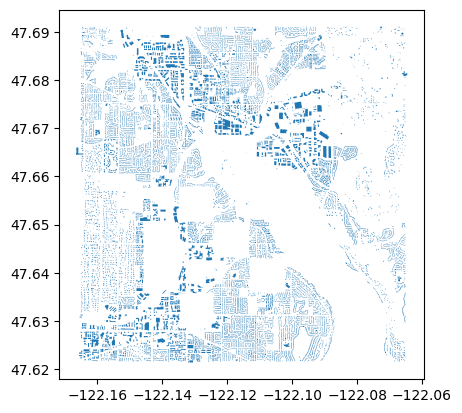

Improved notebook to download buildings from Microsoft
This notebook works with the Microsoft Building Footprint Dataset to download building footprints for a given area of interest (AOI). I modified the original notebook to download the data to output a parquet file of a GeoDataFrame of buildings, instead of GeoJSON.
To find the Jupyter notebook version, please visit here.
# # """install packages if not already installed"""
# %pip install --upgrade pandas geopandas shapely mercantile tqdm folium
set up environment and local varialbles
import pandas as pd
import geopandas as gpd
import shapely.geometry
import mercantile
from tqdm import tqdm
output_fn = "example_building_footprints.parquet"
Step 1 - Define our area of interest (AOI)
We define our area of interest (or AOI) as a GeoJSON geometry, then use the shapely library to get the bounding box.
Note: the coordinate reference system for the GeoJSON should be “EPSG:4326”, i.e. in global lat/lon format.
# Geometry copied from https://geojson.io
aoi_geom = {
"coordinates": [
[
[-122.16484503187519, 47.69090474454916],
[-122.16484503187519, 47.6217555345674],
[-122.06529607517405, 47.6217555345674],
[-122.06529607517405, 47.69090474454916],
[-122.16484503187519, 47.69090474454916],
]
],
"type": "Polygon",
}
aoi_shape = shapely.geometry.shape(aoi_geom)
minx, miny, maxx, maxy = aoi_shape.bounds
Step 2 - Determine which tiles intersect our AOI
"""Get tiles for a given bounding box and zoom level"""
quad_keys = set()
for tile in list(mercantile.tiles(minx, miny, maxx, maxy, zooms=9)):
quad_keys.add(int(mercantile.quadkey(tile)))
quad_keys = list(quad_keys)
print(f"The input area spans {len(quad_keys)} tiles: {quad_keys}")
The input area spans 1 tiles: [21230030]
Step 3 - Download the building footprints for each tile that intersects our AOI and crop the results
This is where most of the magic happens. We download all the building footprints for each tile that intersects our AOI, then only keep the footprints that are contained by our AOI.
Note: this step might take awhile depending on how many tiles your AOI covers and how many buildings footprints are in those tiles.
# read the quads catalog
df = pd.read_csv(
"https://minedbuildings.blob.core.windows.net/global-buildings/dataset-links.csv"
)
# extract urls for the quads we want
urls = df.pipe(lambda x: x[x["QuadKey"].isin(quad_keys)])["Url"].unique()
# download the quads and read as one consolidated pandas dataframe
buildings_df_list = [pd.read_json(url, lines=True) for url in tqdm(urls)]
# concatenate the list of dataframes
buildings_df = pd.concat(buildings_df_list)
# concvert to geopandas dataframe
buildings_gdf = (
buildings_df.pipe(
lambda x: gpd.GeoDataFrame(
data=x,
crs=4326,
geometry=x["geometry"].apply(shapely.geometry.shape),
)
)
# retain the height information
.assign(
height_m=lambda x: x["properties"].apply(
lambda p: p["height"],
),
)
# drop the raw column for height and type
.drop(
columns=[
"properties",
"type",
],
errors="ignore",
)
)
0%| | 0/1 [00:00<?, ?it/s]
# filter to buildings that intersect the AOI
buildings_in_aoi_gdf = buildings_gdf[buildings_gdf.intersects(aoi_shape)]
Step 4 - Save the resulting footprints to a parquet file
# write to parquet
buildings_in_aoi_gdf.to_parquet(output_fn)
Optional sense check
# interactive map
# import folium
# m = buildings_in_aoi_gdf.explore(
# attr="Google",
# tiles="https://mt1.google.com/vt/lyrs=s&x={x}&y={y}&z={z}",
# )
# folium.TileLayer("OpenStreetMap").add_to(m)
# folium.LayerControl().add_to(m)
# m
# static map
buildings_in_aoi_gdf.plot()

Ka Ming FUNG
Data Scientist
Data Scientist who’s interested in the interactions between food security, air pollution, environmental health, and climate change